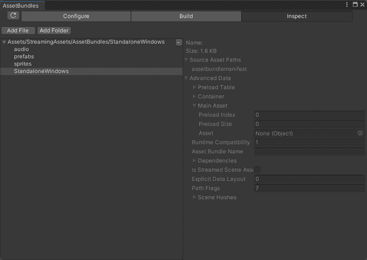
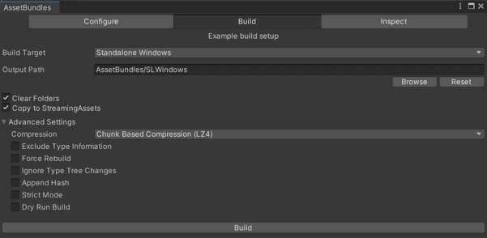
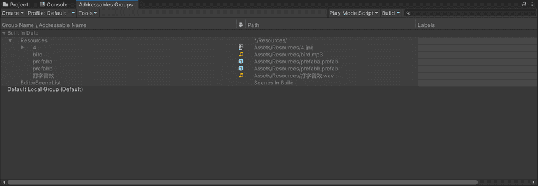

阅读本系列文章前建议先阅读官方文档，本系列文章将尽可能避免赘述官方文档，而是偏向于对官方文档的解释和补充。
示例环境
- Unity 版本：2020.3.48f1
- C# 语言版本: 7.0
- C# 框架：.NET Standard 2.0
- IDE: Visual Studio Code
构建 AssetBundle
API 构建
默认映射
1
| public static AssetBundleManifest BuildAssetBundles (string outputPath, BuildAssetBundleOptions assetBundleOptions, BuildTarget targetPlatform);
|
该方法会按照参数和默认映射规则构建 AssetBundle。
示例代码
1
2
3
4
5
6
7
8
9
10
11
12
13
14
15
16
17
18
19
20
21
22
23
24
25
26
27
28
29
30
31
| [MenuItem("Assets/AssetBundle/Build AssetBundle")]
static void BuildAB()
{
string path = Path.Combine(Application.streamingAssetsPath, "AssetBundles", "StandaloneWindows");
try
{
if (!Directory.Exists(path))
Directory.CreateDirectory(path);
AssetBundleManifest abm = BuildPipeline.BuildAssetBundles(path,
BuildAssetBundleOptions.ChunkBasedCompression, BuildTarget.StandaloneWindows);
if (abm != null)
{
foreach (string ab in abm.GetAllAssetBundles())
{
Debug.Log(ab);
}
}
}
catch (Exception ex)
{
Debug.LogError($"Faild to build assetbundle:{ex.Message}");
return;
}
}
|
在调用 API 构建前，我们需要对资源进行分组，如下面所示的图片：
自定义映射
1
| public static AssetBundleManifest BuildAssetBundles (string outputPath, AssetBundleBuild[] builds, BuildAssetBundleOptions assetBundleOptions, BuildTarget targetPlatform);
|
该方法会按照参数和自定义映射规则构建 AssetBundle。
示例代码
1
2
3
4
5
6
7
8
9
10
11
12
13
14
15
16
17
18
19
20
21
22
23
24
25
26
27
28
29
30
31
32
33
34
35
36
37
38
39
40
41
42
43
44
| [MenuItem("Assets/AssetBundle/Build AssetBundle With Custom Mapping Rule")]
static void BuildABWithCustomMappingRule()
{
string path = Path.Combine(Application.streamingAssetsPath, "AssetBundles", "StandaloneWindows");
try
{
if (!Directory.Exists(path))
Directory.CreateDirectory(path);
AssetBundleBuild[] bundleBuilds = new AssetBundleBuild[3];
string[] sprites = Array.ConvertAll(AssetDatabase.FindAssets("l:Sprite"), guid => AssetDatabase.GUIDToAssetPath(guid));
string[] audio = Array.ConvertAll(AssetDatabase.FindAssets("l:Audio"), guid => AssetDatabase.GUIDToAssetPath(guid));
string[] prefabs = Array.ConvertAll(AssetDatabase.FindAssets("l:Prefab"), guid => AssetDatabase.GUIDToAssetPath(guid));
bundleBuilds[0].assetBundleName = "sprites";
bundleBuilds[0].assetNames = sprites;
bundleBuilds[1].assetBundleName = "audio";
bundleBuilds[1].assetNames = audio;
bundleBuilds[2].assetBundleName = "prefabs";
bundleBuilds[2].assetNames = prefabs;
AssetBundleManifest abm = BuildPipeline.BuildAssetBundles(path, bundleBuilds,
BuildAssetBundleOptions.ChunkBasedCompression, BuildTarget.StandaloneWindows);
if (abm != null)
{
foreach (string ab in abm.GetAllAssetBundles())
{
Debug.Log(ab);
}
}
}
catch (Exception ex)
{
Debug.LogError($"Faild to build assetbundle:{ex.Message}");
return;
}
}
|
在调用 API 构建前，我们需要对资源贴标签，如下面所示的图片：
构建结果
构建完成后，我们将看到如图所示的目录结构：
通过 AssetBundleBrowser 插件可以看到每个 AssetBundle 中更具体的信息和内容，如图所示：

AssetBundleBrowser
参考自官方API：BuildPipeline
工具构建
AssetBundleBrowser

通过AssetBundleBrowser可视化构建
Addressables

通过Addressables可视化构建
还有 YooAsset 等第三方插件，就不一一展示了，具体可以去各自官网的文档了解详细信息。
参考资料
系列文章